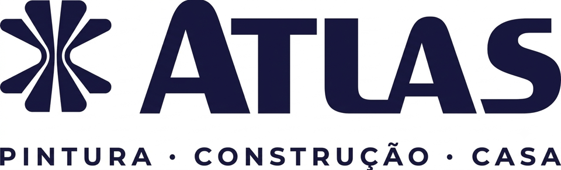
Pintura e acabamento
Atlas
Ferramentas e acessórios para preparação, pintura e acabamento de superfícies.
- Principais produtos
- Rolos, trinchas, acessórios para pintura e equipamentos elétricos.
NOSSAS REPRESENTADAS
Conheça as indústrias que representamos, suas principais linhas e os canais oficiais. Os catálogos estão disponíveis em PDF.

Pintura e acabamento
Ferramentas e acessórios para preparação, pintura e acabamento de superfícies.
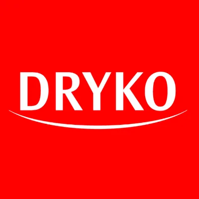
Impermeabilização
Soluções para proteger obras e reformas contra umidade e infiltrações.
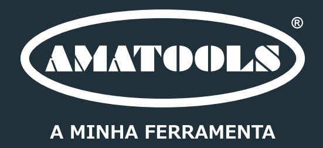
Ferramentas e equipamentos
Portfólio para profissionais da construção, indústria e manutenção.
Tintas spray e aerossóis
Sprays para pintura, acabamento, renovação e manutenção.
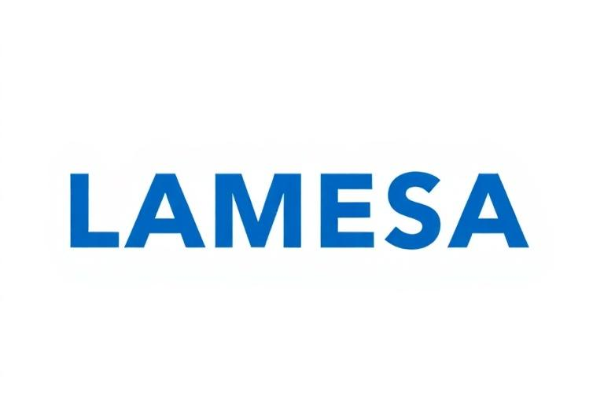
Cabos elétricos
Cabos e condutores para diferentes instalações e aplicações elétricas.
Hidráulica e drenagem
Soluções para drenagem, escoamento e acabamento em projetos de construção.
Metais para instalações
Componentes metálicos para instalações hidráulicas e aproveitamento de água.
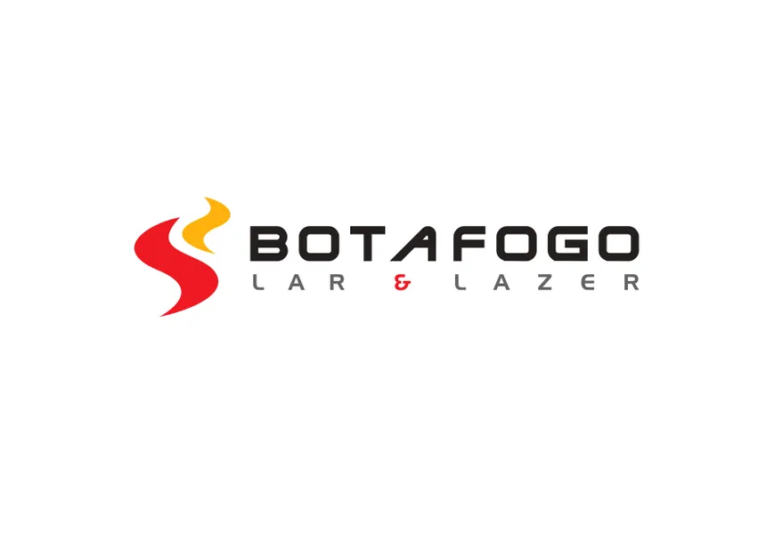
Escadas e utilidades
Produtos de alumínio e fibra para obras, serviços e uso diário.
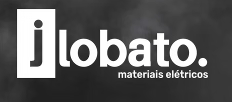
Materiais elétricos
Componentes para proteção e conexão de instalações elétricas.
Fale com a LG sobre as marcas, os catálogos ou uma possível parceria de representação.
Explore uma linha de cada marca e acesse o catálogo e a fonte oficial para conhecer os detalhes.
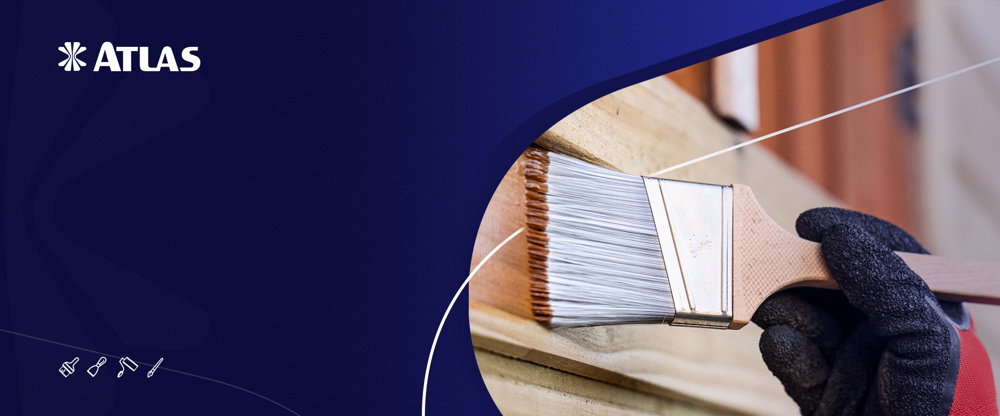
Rolos, trinchas e acessórios de pintura formam uma linha central do portfólio Atlas para preparo, aplicação e acabamento.
Conheça na Atlas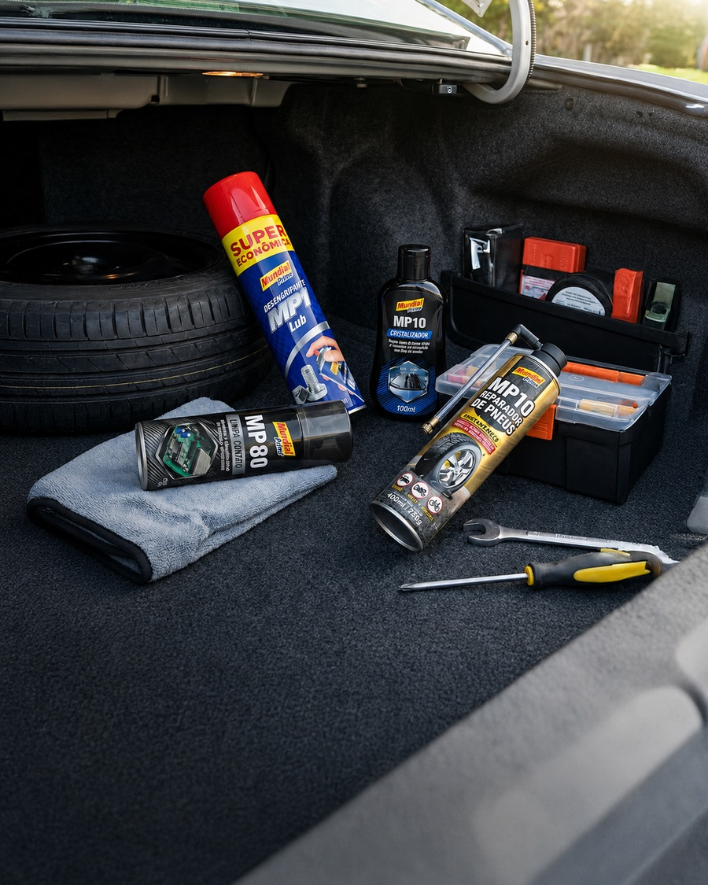
Tintas spray para pintura e acabamento, além de aerossóis para manutenção e reparos. Explore as aplicações e escolha a linha adequada.
Conheça na Mundial Prime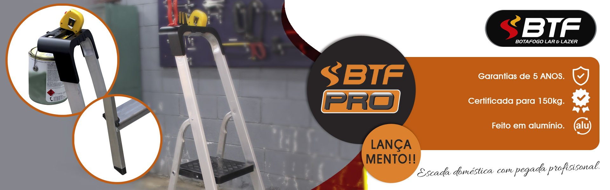
Escadas de alumínio e fibra estão entre as linhas centrais da Botafogo. Confira o modelo e as especificações antes de indicar a aplicação.
Conheça na Botafogo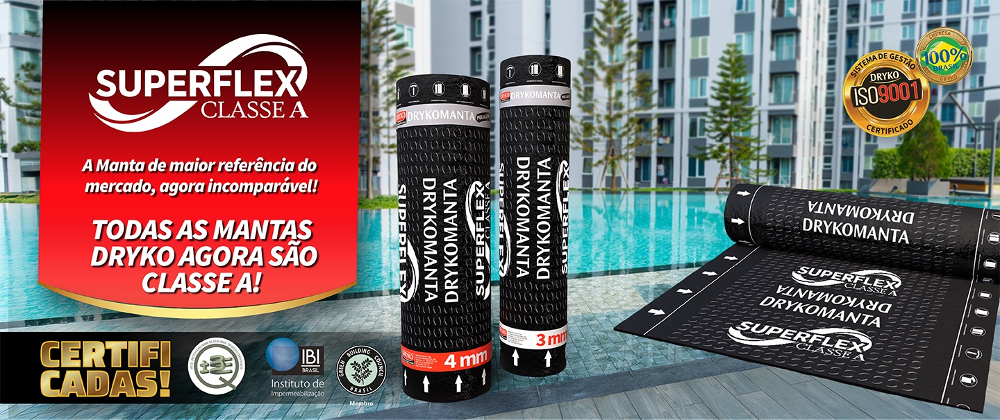
A linha Drykomanta reúne mantas para impermeabilização de lajes e áreas que exigem proteção contra umidade. Consulte a ficha técnica de cada aplicação.
Conheça na Dryko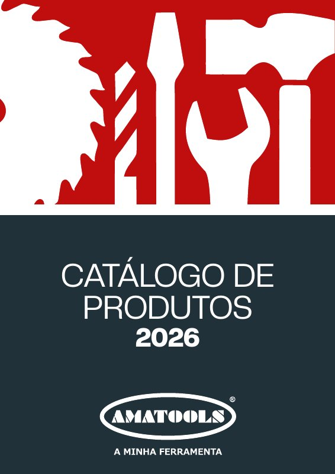
A linha Rocast, do portfólio Amatools, reúne brocas e discos de corte para diferentes trabalhos. Confira medidas e aplicações no catálogo oficial.
Conheça na Amatools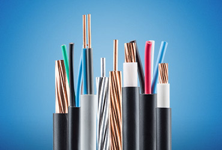
Cabos e condutores flexíveis compõem uma linha importante da Lamesa para instalações elétricas. Confira a especificação de cada família antes da escolha.
Conheça na Lamesa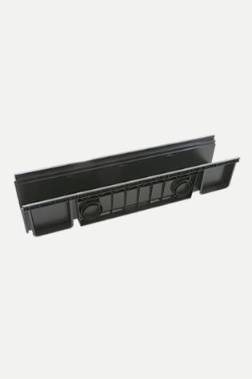
Os canais e acessórios de drenagem Odem ajudam a compor sistemas de escoamento. Compare medidas e grelhas conforme o projeto.
Conheça na OdemRegistros de pressão, gaveta e esfera, além de válvulas, fazem parte da linha hidráulica da Saga Metais. Consulte modelos e medidas no catálogo.
Conheça na Saga Metais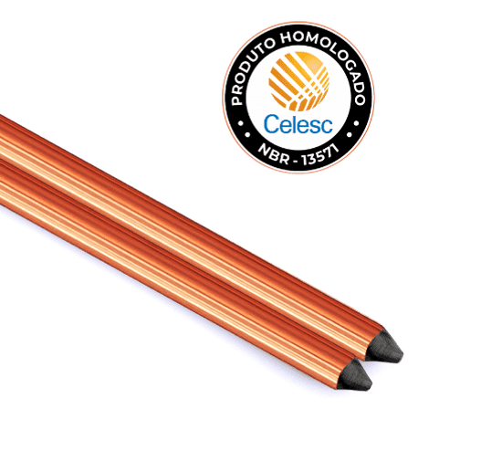
As hastes de aterramento de alta camada são um destaque da J. Lobato. Veja também grampos, conectores e medidas disponíveis na fonte oficial.
Conheça na J. Lobato9 destaques das nossas representadas.